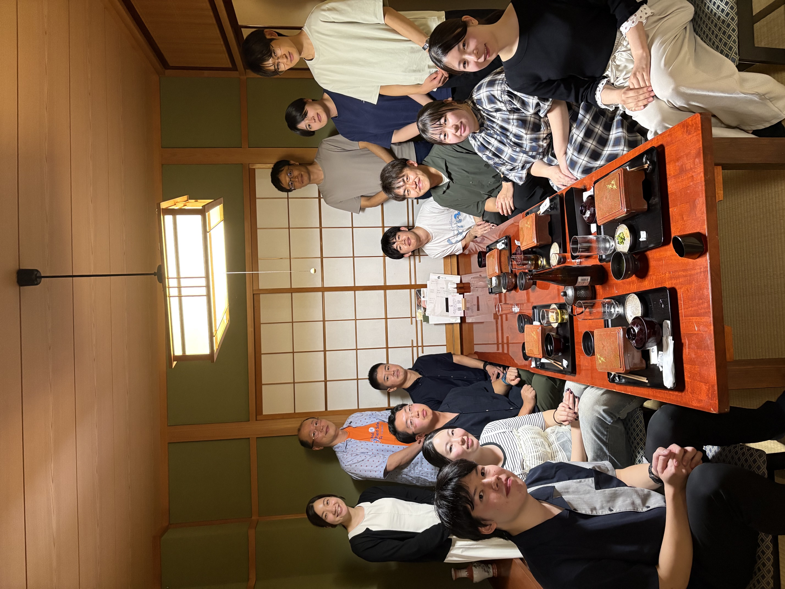
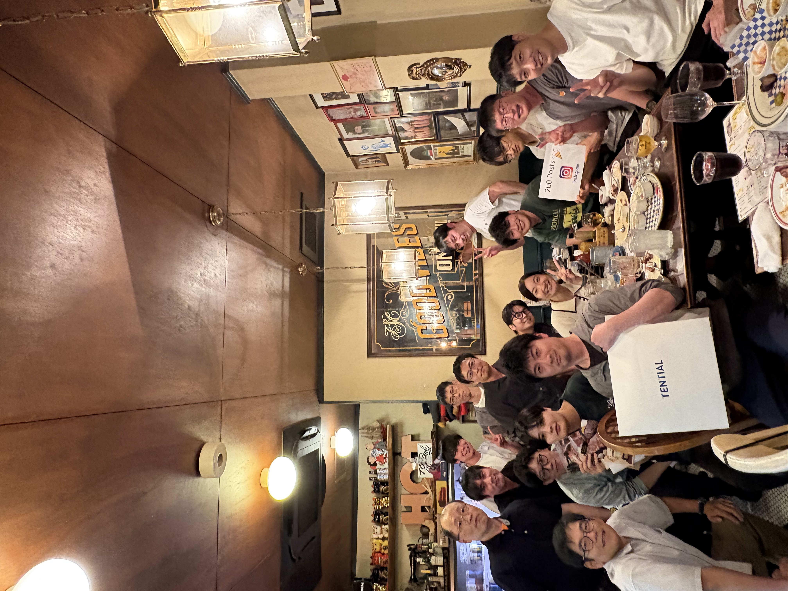

ENT
浜松医科大学 耳鼻咽喉科・頭頸部外科
オフィシャルポータル
ホーム
教室紹介
スタッフ紹介
学生病院実習
採用情報
ブログ
コンテンツ
PDF資料室
学会体験記
専攻医の一日：大学病院
専攻医の一日：市中病院
留学体験記：杉山先生
留学体験記：佐原先生
R5.10.27 偲ぶ会と祝賀会のご報告
R7.11.29 祝賀会のご報告
ホーム
教室紹介
スタッフ紹介
学生病院実習
採用情報
ブログ
コンテンツ
PDF資料室
学会体験記
専攻医の一日：大学病院
専攻医の一日：市中病院
留学体験記：杉山先生
留学体験記：佐原先生
R5.10.27 偲ぶ会と祝賀会のご報告
R7.11.29 祝賀会のご報告
ブログ
医局の日常、学会情報、研究室の様子、学生実習での懇親など、様々な活動をお伝えします。
2026.09.26
第85回日本癌学会学術総会 in 京都
記事を読む
2026.09.24
京都府立医大にて大学院特別講義を行いました。
記事を読む

2026.09.19
6年生医局説明会を開催しました。
記事を読む

2026.09.17
送別会を開催しました。
記事を読む
2026.09.14
9月17日は、世界患者安全の日です。
記事を読む
2026.09.03
第39回日本口腔・咽頭科学会 in 新宿
記事を読む
2026.08.31
ミシガン大学訪問最終日
記事を読む
2026.08.30
ミシガン大学アナーバーを散策。
記事を読む
2026.08.30
ミシガン大学Nor研究室への訪問。
記事を読む
2026.08.22
第43回耳鼻咽喉科ニューロサイエンス研究会 in 長崎
記事を読む
2026.08.14
金澤丈治教授による手術指導
記事を読む
2026.08.12
磐田で懇親会を開催しました。
記事を読む
2026.07.26
名古屋市立大の岩崎真一先生にご講演いだだきました。
記事を読む
2026.07.25
沼津で懇親会を開催しました。
記事を読む
2026.07.20
第73回中部連合 in 松本 集合写真編
記事を読む
2026.07.19
第73回中部連合 in 松本 野球大会
記事を読む
2026.07.19
第73回中部連合 in 松本 講演会 and 演芸大会
記事を読む
2026.07.08
2027年春の入局情報
記事を読む
2026.07.08
2027年春の入局情報
記事を読む
2026.07.03
第21回日本小児耳鼻咽喉科学会 in 大宮
記事を読む
2026.07.03
第2回サマースクール2026 in 大阪
記事を読む
2026.07.03
第88回耳鼻咽喉科臨床学会 in 大阪 懇親会
記事を読む
2026.07.03
第88回耳鼻咽喉科臨床学会 in 大阪 学会発表
記事を読む
2026.07.03
来月の中部連合 in 信州に向けて
記事を読む
2026.06.06
医局説明会を開催しました。
記事を読む
2026.06.05
選択ポリクリ最終第９グループ
記事を読む
2026.05.28
2027年春の入局情報
記事を読む
2026.05.24
選択ポリクリ第８グループ
記事を読む
2026.05.23
記念撮影＠仙台懇親会
記事を読む
2026.05.23
記念撮影＠仙台総会
記事を読む
2026.05.22
第127回日本耳鼻咽喉科頭頸部外科学会総会 in 仙台 2日目
記事を読む
2026.05.21
第127回日本耳鼻咽喉科頭頸部外科学会総会 in 仙台 1日目
記事を読む
2026.05.21
耳鼻咽喉科教育・育成功労賞 2025表彰
記事を読む
2026.05.20
第127回日本耳鼻咽喉科頭頸部外科学会総会 in 仙台 前夜祭
記事を読む
2026.05.13
藤枝市立総合病院研修医2年目の藤谷明澄先生が医局見学に来られました。
記事を読む
2026.05.13
送別会、歓迎会を開催しました。
記事を読む
2026.05.11
焼津市立総合病院2年目研修医の和田健志先生が耳鼻科ローテ中です。
記事を読む
2026.05.08
聖隷三方原病院研修医2年目の北川雄生先生が医局見学に来られました。
記事を読む
2026.05.01
教室開講50年企画
記事を読む
2026.04.27
American Association for Cancer Research（米国癌学会） in San Diego
記事を読む
2026.04.24
選択ポリクリ第７グループ
記事を読む
2026.04.19
岩手県地方部会講演会で講演させていただきました。
記事を読む
2026.04.17
静岡市の病院の2年目研修医小栗瑚雪先生が医局訪問されました。
記事を読む
2026.04.16
研修医とメンターとの顔合わせイベントがありました。
記事を読む
2026.04.13
池羽宇宙先生が国立国際医療センターで国内研修を開始しています。
記事を読む
2026.04.11
第6回日本耳鼻咽喉科免疫アレルギー感染症学会(JIAIO) in 高崎
記事を読む
2026.04.07
新入職員です！2026
記事を読む
2026.04.06
選択ポリクリ第６グループ
記事を読む
2026.03.31
新医局長、新副医局長が就任しました。
記事を読む
2026.03.29
福井県地方部会講演会で講演させていただきました。
記事を読む
2026.03.29
「サランの会」が開かれました。
記事を読む
2026.03.27
選択ポリクリ第５グループ
記事を読む
2026.03.25
医局送別会を開催しました。
記事を読む
2026.03.24
医大１年目研修医増田佳大先生が医局訪問されました。
記事を読む
2026.03.18
中東遠総合医療センター研修医1年目の中村優花先生が医局見学に来られました。
記事を読む
2026.03.16
御前崎市立病院の林絹子さんへの感謝の会を開催しました。
記事を読む
2026.03.14
医局の胡蝶蘭がきれいに咲いています。
記事を読む
2026.03.13
選択ポリクリ第４グループ
記事を読む
2026.03.11
令和7年度卒業生謝恩会に参加しました。
記事を読む
2026.03.06
第38回日本喉頭科学会 in 名古屋
記事を読む
2026.03.03
選択ポリクリ第３グループ
記事を読む
2026.03.03
第58回SENT会 in 静岡が開かれました。
記事を読む
2026.03.02
浜松医大耳鼻咽喉科表彰をおこないました。
記事を読む
2026.03.01
金澤丈治教授による手術指導
記事を読む
2026.02.28
順天堂大静岡病院研修医1年目の野田葵生先生が医局見学に来られました。
記事を読む
2026.02.25
第3回磐田懇親会開催と医局見学
記事を読む
2026.02.18
沼津市立病院研修医1年目の河本遼介先生、池田亜理紗先生が医局見学に来られました。
記事を読む
2026.02.13
選択ポリクリ第２グループ
記事を読む
2026.02.07
第10回リキッドバイオプシー研究会 in 京都
記事を読む
2026.02.07
第35回日本頭頸部外科学会 in 横浜
記事を読む
2026.01.30
選択ポリクリ第１グループ
記事を読む
2026.01.26
山形大での耳科手術研修が終了しました。
記事を読む
2026.01.25
三島で懇親会を開きました。
記事を読む
2026.01.15
第14回 内視鏡下耳科手術ハンズオンセミナー in 山形
記事を読む
2026.01.10
増田守先生が東京慈恵会医科大で国内研修しています。
記事を読む
2026.01.09
喜夛淳哉先生が山形大で国内研修しています。
記事を読む
2026.01.01
迎春
記事を読む
2025.12.27
「イメージがかわった科」の2位に選ばれました。
記事を読む
2025.12.26
ミシガン大留学中の山田智史先生が一時帰国し講演しました。
記事を読む
2025.12.24
磐田で第2回懇親会を開きました。
記事を読む
2025.12.23
金沢大の近藤先生、松村先生とナノスーツ開発研究部の河崎先生とランチしました。
記事を読む
2025.12.22
実験室に新しい－80度冷凍庫がはいりました。
記事を読む
2025.12.19
医大1年目秋月智仁先生が耳鼻科ローテ2か月目です。
記事を読む
2025.12.02
医局説明会後の各地懇親会の様子
記事を読む
2025.12.01
来春の新入局員と入団記念撮影をおこないました。
記事を読む
2025.11.30
若手医局員による余興
記事を読む
2025.11.30
星野知之先生、峯田周幸先生、中西啓先生の祝賀会が開かれました。
記事を読む
2025.11.29
同門会を開催しました
記事を読む
2025.11.29
HOCを開催しました
記事を読む
2025.11.28
1年目研修医対象の医局説明会をオンライン開催しました。
記事を読む
2025.11.28
今野弘之特別顧問にご挨拶
記事を読む
2025.11.27
渡邉裕司学長にご挨拶
記事を読む
2025.11.27
静岡市で懇親会を開きました。
記事を読む
2025.11.24
第39回日本耳鼻咽喉科頭頸部外科学会秋季大会 in 横浜
記事を読む
2025.11.08
2027年春の入局情報
記事を読む
2025.11.07
第76回日本気管食道科学会 in 久留米
記事を読む
2025.11.02
頭頸部癌研究のためのサンプリング
記事を読む
2025.10.28
新グッズを作りました。
記事を読む
2025.10.26
静岡県地方部会講演会で奈良医大の北原糺先生にご講演いだだきました。
記事を読む
2025.10.15
三河遠州合同の研究会・懇親会が開かれました。
記事を読む
2025.10.08
同門会長と祝賀会、同門会の打合せ
記事を読む
2025.10.06
医局集合写真2025の撮影をおこないました。
記事を読む
2025.10.05
浜松市耳鼻咽喉科医会総会が開かれました。
記事を読む
2025.10.04
第40回日本耳鼻咽喉科漢方研究会学術集会 in 品川
記事を読む
2025.09.28
健康はままつ21講演会で村上信五先生がご講演されました。
記事を読む
2025.09.26
第84回日本癌学会 in 金沢
記事を読む
2025.09.24
６年生説明会を開催しました。
記事を読む
2025.09.19
医大研修医懇親会その2
記事を読む
2025.09.16
9月17日は、世界患者安全の日です。
記事を読む
2025.09.11
第38回日本口腔・咽頭科学会 in 函館
記事を読む
2025.09.06
金澤丈治教授による手術指導
記事を読む
2025.08.26
焼津市立総合病院の1年目和田健志先生と懇親しました。
記事を読む
2025.08.02
2026年春の入局情報
記事を読む
2025.07.31
2026年春の入局情報
記事を読む
2025.07.30
第1回サマースクール2025 in 六本木ヒルズ
記事を読む
2025.07.29
2026年春の入局情報
記事を読む
2025.07.29
2026年春の入局情報
記事を読む
2025.07.27
2026年春の入局情報
記事を読む
2025.07.20
第72回中部連合 in 名古屋 ボウリング大会
記事を読む
2025.07.19
第72回中部連合 in 名古屋 講演会 and 演芸大会
記事を読む
2025.07.16
藤枝で懇親会を開催しました。
記事を読む
2025.07.12
第41回日本めまい平衡医学会医師講習会 in 松本
記事を読む
2025.07.08
磐田で懇親会を開催しました。
記事を読む
2025.07.04
沼津で懇親会を開催しました。
記事を読む
2025.06.27
第87回耳鼻咽喉科臨床学会 in 奈良 懇親会
記事を読む
2025.06.26
第87回耳鼻咽喉科臨床学会 in 奈良
記事を読む
2025.06.24
歓送迎会がおこなわれました。
記事を読む
2025.06.18
沼津市立病院2年目研修医の宮嶋佑先生が医局見学に来られました。
記事を読む
2025.06.15
第49回日本頭頸部癌学会 in 札幌
記事を読む
2025.06.06
医大研修医懇親会
記事を読む
2025.06.05
選択ポリクリ最終第9グループ
記事を読む
2025.06.03
1年目研修医 増田佳大先生がローテしています。
記事を読む
2025.05.29
第126回日本耳鼻咽喉科頭頸部外科学会総会 in 横浜 2日目
記事を読む
2025.05.28
第126回日本耳鼻咽喉科頭頸部外科学会総会 in 横浜 1日目
記事を読む
2025.05.28
耳鼻咽喉科教育・育成功労賞 2024表彰
記事を読む
2025.05.27
女性医師懇親会が開かれました。
記事を読む
2025.05.24
医局説明会を行いました。
記事を読む
2025.05.23
選択ポリクリ第8グループ
記事を読む
2025.05.21
研修医2年目 鈴木ひな先生がローテしています。
記事を読む
2025.05.17
静岡で懇親会を開きました。
記事を読む
2025.05.07
沼津市立病院2年目研修医の櫻井絢矢先生が医局見学に来られました。
記事を読む
2025.05.02
選択ポリクリ第7グループ
記事を読む
2025.04.24
研修医とメンターとの顔合わせイベントがありました。
記事を読む
2025.04.23
順天堂大学附属静岡病院研修医2年目の中嶋慎太郎先生(富士市出身)が医局見学に来られました
記事を読む
2025.04.18
第5回日本耳鼻咽喉科免疫アレルギー感染症学会 in 秋田
記事を読む
2025.04.15
選択ポリクリ第６グループ
記事を読む
2025.04.07
新入職員です！2025
記事を読む
2025.04.04
選択ポリクリ第5グループ
記事を読む
2025.03.29
サランの会
記事を読む
2025.03.25
ナノスーツ開発研究部との懇親会を開催しました。
記事を読む
2025.03.21
選択ポリクリ第4グループ
記事を読む
2025.03.14
第69回韓国鼻科学会 in 麗水市
記事を読む
2025.03.12
卒業生謝恩会に参加しました。
記事を読む
2025.03.08
第37回日本喉頭科学会 in 福島
記事を読む
2025.03.05
送別会を開催しました。
記事を読む
2025.03.04
選択ポリクリ第３グループ
記事を読む
2025.03.03
2年目研修医 堀井彩花先生がローテしています。
記事を読む
2025.02.21
選択ポリクリ第２グループ
記事を読む
2025.02.21
金澤丈治教授による手術指導
記事を読む
2025.02.20
鼻手術教育セミナー第3回を開催しました。
記事を読む
2025.02.14
H型耳垢鉗子（浜松医大式）の販売が開始になりました。
記事を読む
2025.02.07
第9回リキッドバイオプシー研究会 in 新宿
記事を読む
2025.01.24
静岡市立清水病院1年目研修医の鈴木ひな先生が医局見学に来られました。
記事を読む
2025.01.24
選択ポリクリ第１グループ
記事を読む
2025.01.15
1年目研修医山口先生が医局見学に来られました。
記事を読む
2025.01.10
第200回抄読会
記事を読む
2024.12.31
謹賀新年
記事を読む
2024.12.09
山田智史先生が、安田記念医学財団の表彰を受けました。
記事を読む
2024.11.30
第38回日耳鼻秋季大会 in 京都
記事を読む
2024.11.30
医局説明会後の各地懇親会の様子
記事を読む
2024.11.28
一年目研修医対象の医局説明会をオンラインで行いました。
記事を読む
2024.11.25
春からの新入局員と記念撮影を行いました。
記事を読む
2024.11.25
医局忘年会を開催しました。
記事を読む
2024.11.25
同門会を現地開催しました。
記事を読む
2024.11.23
HOCを現地開催しました。
記事を読む
2024.11.20
沼津市立病院にて懇親会を行いました。
記事を読む
2024.11.12
中東遠医療センター2年目研修医の松下賢悟先生と面談しました。
記事を読む
2024.11.07
佐原聡甫先生の学位審査がありました。
記事を読む
2024.10.28
長井健一郎先生が転勤の挨拶に来られました。
記事を読む
2024.10.24
浜松医療センターで懇親会を行いました。
記事を読む
2024.10.19
静岡・清水の懇親会を開きました。
記事を読む
2024.10.04
第34回日本耳科学会 in 名古屋
記事を読む
2024.10.01
第63回日本鼻科学会 in 東京
記事を読む
2024.09.26
送別会を開催しました。
記事を読む
2024.09.20
6年生対象説明会を開催しました。
記事を読む
2024.09.20
第83回日本癌学会 in 博多
記事を読む
2024.09.05
第37回日本口腔咽頭科学会 in 和歌山
記事を読む
2024.09.03
福井大学に内視鏡下甲状腺切除術( VANS法）の手術見学に伺いました。
記事を読む
2024.08.29
浜松医大2年目研修医の堀井彩花先生が医局を訪問されました。
記事を読む
2024.08.28
富士宮市立病院の猪瀬祐気先生から入局希望をいただきました。
記事を読む
2024.08.26
磐田市立総合病院の研修医の先生たちと懇親会を開きました。
記事を読む
2024.08.23
金澤丈治教授による手術指導
記事を読む
2024.08.05
磐田市立総合病院2年目研修医の服部大地先生が耳鼻科ローテ中です
記事を読む
2024.07.27
静岡済生会病院2年目研修医寳積志帆先生が医局見学に来られました。
記事を読む
2024.07.27
沼津市立病院耳鼻科で懇親会が開かれました。
記事を読む
2024.07.20
静岡済生会病院の病診連携納涼会に参加しました。
記事を読む
2024.07.17
聖隷三方原病院2年目研修医 山本優 先生が病院見学に来られました
記事を読む
2024.07.14
第71回中部連合 in 新潟 講演会 and 演芸大会
記事を読む
2024.07.14
第71回中部連合 in 新潟 野球大会
記事を読む
2024.07.10
浜松医療センター2年目研修医小笠原慎一先生が医局見学に来られました。
記事を読む
2024.07.05
藤枝市立総合病院2年目研修医大野智里先生が医局見学に来られました。
記事を読む
2024.07.03
実験室に新しい遠心機がはいりました。
記事を読む
2024.06.29
第86回耳鼻咽喉科臨床学会 in 福井
記事を読む
2024.06.22
第48回日本頭頸部癌学会 in 浜松
記事を読む
2024.06.16
中部連合 in 新潟に向けて
記事を読む
2024.06.14
中東遠総合医療センター2年目研修医藤森拓先生が医局見学に来られました。
記事を読む
2024.06.14
選択ポリクリ最終グループ
記事を読む
2024.06.12
沼津市立病院2年目研修医高瀬ミキ先生が医局見学に来られました。
記事を読む
2024.06.11
鼻手術教育セミナー第2回を開催しました
記事を読む
2024.06.10
浜松医科大学開学50周年記念式典
記事を読む
2024.06.05
医大1年目研修医の梶原陸先生が耳鼻科ローテ中です
記事を読む
2024.05.30
医大2年目研修医堀井彩花先生と懇談会
記事を読む
2024.05.25
医局説明会を開催しました
記事を読む
2024.05.18
第125回日本耳鼻咽喉科頭頸部外科学会総会 in 大阪 2日目
記事を読む
2024.05.17
入局記念撮影 in 第125回日本耳鼻咽喉科頭頸部外科学会総会
記事を読む
2024.05.16
第125回日本耳鼻咽喉科頭頸部外科学会総会 in 大阪 1日目
記事を読む
2024.05.14
選択ポリクリ第４グループ
記事を読む
2024.05.11
静岡で懇親会を開きました。
記事を読む
2024.04.26
歓送迎会を開催しました。
記事を読む
2024.04.19
松下賢悟先生、濵野一太先生が病院見学に来られました。
記事を読む
2024.04.13
第 4 回日本耳鼻咽喉科免疫アレルギー感染症学会 in 大阪
記事を読む
2024.04.12
選択ポリクリ第３グループ
記事を読む
2024.04.08
新入職員です！2024
記事を読む
2024.04.04
医大2年目研修医の堀井彩花先生、森田恵理先生が耳鼻科ローテ中です。
記事を読む
2024.03.30
復活！サランの会
記事を読む
2024.03.29
選択ポリクリ第2グループ
記事を読む
2024.03.21
済生会病院の別所先生の送別会
記事を読む
2024.03.21
静岡県立こども病院を訪問しました
記事を読む
2024.03.20
磐田市立総合病院の研修医先生との懇談会
記事を読む
2024.03.13
卒業生謝恩会に参加しました
記事を読む
2024.03.07
第36回日本喉頭科学会 in 京都
記事を読む
2024.03.01
選択ポリクリ第1グループ
記事を読む
2024.02.29
科研費の発表がありました
記事を読む
2024.02.22
掛川での新年会
記事を読む
2024.02.09
金澤丈治教授による手術指導
記事を読む
2024.02.03
埼玉医大研修医佐藤元裕先生との懇親会
記事を読む
2024.01.30
実験室に新しい冷凍冷蔵庫がはいりました
記事を読む
2024.01.23
鼻手術教育セミナー第1回を開催しました。
記事を読む
2024.01.17
医局医師室に机を購入
記事を読む
2024.01.01
初日の出
記事を読む
2023.12.22
忘年会を開催しました
記事を読む
2023.12.12
実験室に新しい機器がはいりました。
記事を読む
2023.12.03
HOCをハイブリッド開催しました。
記事を読む
2023.12.02
11月30日の懇親会の様子
記事を読む
2023.11.30
初期研修医対象医局説明会をオンライン開催しました
記事を読む
2023.11.07
沼津市立病院の本間晃史先生と懇談会を開きました。
記事を読む
2023.10.26
祝賀会
記事を読む
2023.10.11
磐田市立総合病院の研修医先生との懇談会
記事を読む
2023.10.01
第62回日本鼻科学会 in 三重
記事を読む
ENT NEWS
2023.09.25
実験室に新しい機器がはいりました。
記事を読む
2023.09.14
講演：第36回日本口腔・咽頭科学会 in 高知
記事を読む
2023.09.11
済生会、富士宮市立病院の研修医先生との懇談会
記事を読む
2023.09.08
6年生耳鼻科説明会を開催しました。
記事を読む
2023.08.23
掛川での納涼会
記事を読む
2023.07.27
7月耳鼻科ローテの千野帆夏先生との懇談会
記事を読む
2023.07.26
佐藤稔久先生が病院見学に来られました。
記事を読む
2023.07.20
浅井勇希先生が病院見学に来られました。
記事を読む
2023.07.19
野球大会
記事を読む
2023.07.19
演芸大会
記事を読む
2023.07.13
医大２年目研修医の竹内実喜子先生と懇談会
記事を読む
2023.07.05
焼津市立病院２年目研修医の千野帆夏先生が耳鼻科ローテ中です
記事を読む
2023.07.01
講演：日本リハビリテーション医学会
記事を読む
2023.06.23
千葉大分子腫瘍学教室を訪問しました。
記事を読む
2023.06.22
送別会を開催しました。
記事を読む
2023.06.19
山田先生の学位審査が行われました。
記事を読む
ENT NEWS
2023.06.17
選択ポリクリの第9グループ
記事を読む
2023.06.12
選択ポリクリの第7グループその2
記事を読む
2023.06.09
医大２年目研修医の竹内実喜子先生が耳鼻科ローテ中です。
記事を読む
2023.06.02
５月耳鼻科ローテの研修医相川遂夫先生の最終日
記事を読む
2023.06.01
中東遠総合医療センター研修医2年目の中屋海帆子先生が病院見学に来られました。
記事を読む
2023.05.30
選択ポリクリの第8グループ
記事を読む
2023.05.30
選択ポリクリの第7グループ
記事を読む
2023.05.23
石川先生の学位審査が行われました。
記事を読む
2023.05.22
日耳鼻総会に参加しました②
記事を読む
2023.05.21
日耳鼻総会に参加しました①
記事を読む
2023.05.14
医局説明会を開催しました。
記事を読む
2023.04.28
医大研修医２年目の先生との懇談会
記事を読む
2023.04.23
東海大学病院研修医２年目の大石悠篤先生が病院見学に来られました。
記事を読む
2023.04.20
藤枝市立総合病院研修医２年目の秋田貴紀先生が病院見学に来られました。
記事を読む
2023.04.13
選択ポリクリの第6グループ
記事を読む
2023.04.12
新入職員です！
記事を読む
2023.03.31
選択ポリの第5グループ
記事を読む
2023.03.29
新しいリアルタイムPCR装置が納品されました。
記事を読む
2023.03.19
選択ポリクリの第4グループ
記事を読む
2023.03.15
焼津市立総合病院の研修医の先生との懇談会
記事を読む
2023.03.07
浜松医療センターの研修医の先生との懇談会
記事を読む
2023.03.03
選択ポリクリの第3グループ
記事を読む
2023.03.02
金澤丈治教授による手術指導
記事を読む
2023.02.23
選択ポリクリ第二グループ
記事を読む
2023.02.22
磐田市立総合病院の研修医の先生との懇談会
記事を読む
2023.02.21
選択ポリクリ第一グループ
記事を読む
2023.02.18
美馬先生の学位審査
記事を読む
もっと見る